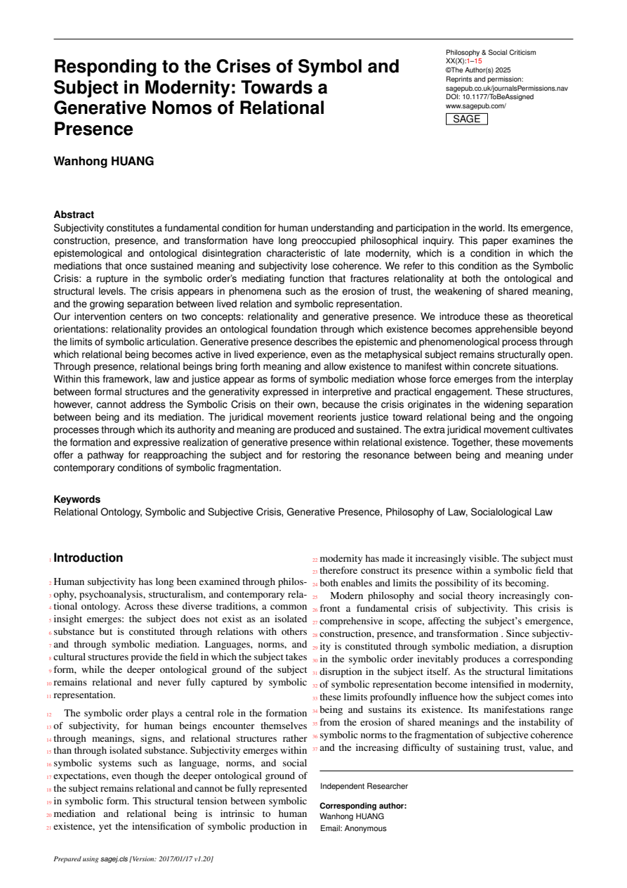
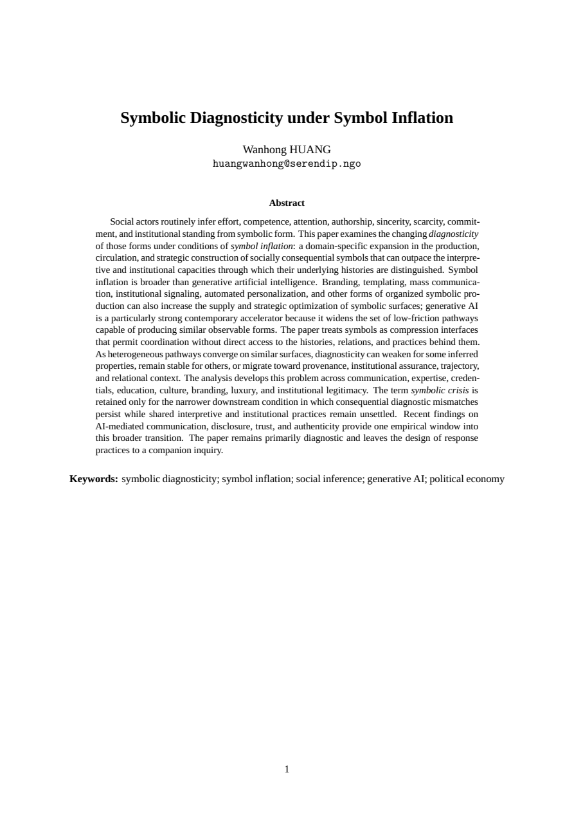
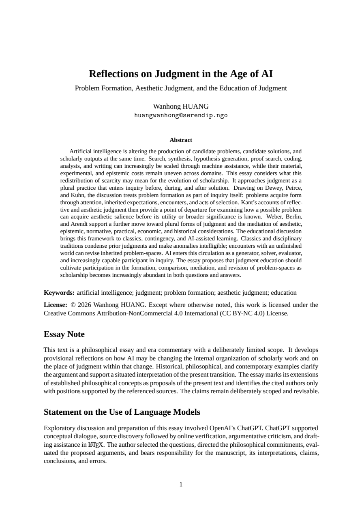
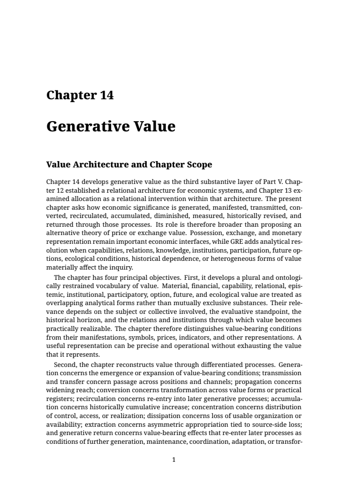
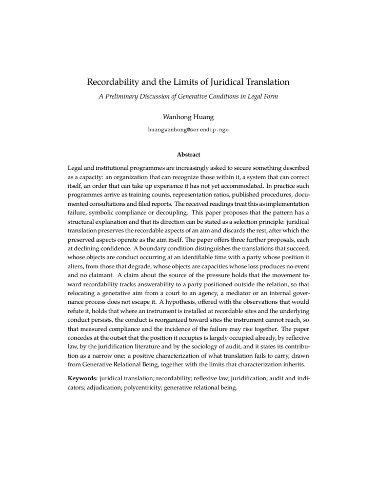

経歴に関連する参考論文 · 2023 · 査読付き国際会議論文・著者版
Optimizing the Order of Bytecode Handlers in Interpreters using a Genetic Algorithm
- Figure 5 · p.7｜四つの CPU 環境での評価（図・キャプション全体）
四つの CPU 環境のグラフ、軸、95%信頼区間を示す元のキャプションを保持。旧選段は適切なため継続。
原稿の抜粋画像 ↗
研究経歴と応募の背景
11篇の論文全文と、図・表・定義・原文段落を確認できます。第3頁の時代診断には、関連する3篇と参照頁を示しています。
画像は原稿の連続した領域を抜粋し、図や数式そのものは描き直していません。
経歴に関連する参考論文 · 2023 · 査読付き国際会議論文・著者版
四つの CPU 環境のグラフ、軸、95%信頼区間を示す元のキャプションを保持。旧選段は適切なため継続。
原稿の抜粋画像 ↗
スライド 3 · 2025 · 理論研究・プレプリント
全文 PDF（ローカル） ／ 公開記録 ↗ ／ 原稿第1頁 ↗
主体と記号の危機の相互形成を論じ、意味の空洞化、相互承認の困難、主体の疎外、認識や感情の変容を含む多面的な問題として考察しています。
本人の哲学的診断として参照しています。信頼の低下は一つの現れであり、危機全体の定義ではありません。誌面の投稿用テンプレートは掲載・採択・査読済みを示しません。

スライド 3 · 2026 · Working Paper・プレプリント
全文 PDF（ローカル） ／ 公開記録 ↗ ／ 原稿第1頁 ↗
記号表現から生成の過程や関与を推し量る条件の変化を検討し、コミュニケーション、主体の関与、文化的・社会的価値にも議論を広げています。
本稿の診断的失配という限定的な問題設定を、主体の疎外などを含む記号危機全体の定義に置き換えていません。生成AIは加速要因の一つです。

スライド 3 · 2026 · 哲学的エッセイ・プレプリント
全文 PDF（ローカル） ／ 公開記録 ↗ ／ 原稿第1頁 ↗
既成の規則に尽くされない反省的判断、美の経験と言語化の順序、言葉に尽くされない審美的経験、および複数の判断のあり方を論じています。
判断を規範判断や明示的な基準の適用に限定していません。生成性・関係性・個々の存在への判断は本人の今回の説明に基づく射程であり、この論考に確立した分類があるという主張ではありません。

スライド 5 · 2025 · 理論的提案・プレプリント
群場論の作用を自由項と相互作用項に分ける式（1）の原文画像。第12頁§3.1では、この作用を言語体系の記述に用いる。
原稿の抜粋画像 ↗普遍的な言語体系を表す作用から、対称性の破れを通じて個別の言語体系を表す作用を得る式。作用の空間上の写像である。
原稿の抜粋画像 ↗生成演算子をフォック真空に作用させ、個々の統語構造を状態として表す式（22）の全文。作用そのものと、状態とを区別する。
原稿の抜粋画像 ↗統語構造の状態と解釈体系に依存する演算子の期待値によって、意味を表す式（23）。解釈体系は生成に用いられた体系と同一とは限らない。
原稿の抜粋画像 ↗
スライド 7 · 2026 · 理論研究・プレプリント
主体が関係のなかで生成され、自己と他者の境界及び関係を再生産する能力が形成されるという中心命題の囲み全体。
原稿の抜粋画像 ↗共有された関係の場への参与を通じて能力が生成し続けることを述べた定義の囲み全体。
原稿の抜粋画像 ↗
スライド 8 · 2026 · 公開章稿・プレプリント
測定表現を数値だけに限定せず、質的・関係的・空間的・時間的な表現を含め、目的及び保持・省略される情報に照らして捉える定義全体。
原稿の抜粋画像 ↗病院の待ち時間の説明例を含む段落全体。狭く定めた問いには限定された表現で足りる場合もあるという結句を保持。
原稿の抜粋画像 ↗
スライド 9 · 2026 · Working Draft・プレプリント
受援が提供者への返礼義務を生まないことと、価値生成及び支援の権利の区別を述べる論断全体。
原稿の抜粋画像 ↗尊厳の保護をあらゆる生成性の評価に先立たせ、その結果にかかわらず維持する制約の全文。
原稿の抜粋画像 ↗
スライド 10 · 2026 · DRAFT・プレプリント
可能な経路の記述と、それを必然的な順序とはしない段落全体を連続して抜粋。関心が生まれる他の経路も保持。
原稿の抜粋画像 ↗節見出しと第一段落全体。美的・評価的な経験から規範形成へ至る可能な過程と、その説明だけでは正当化できないという限定を共に示す。
原稿の抜粋画像 ↗
スライド 11 · 2026 · 研究草稿・プレプリント
表題、三列の見出し、Institutional／Interpretive／Categorial／Cognitive／Symbolicの全五項目を保持した原表。
原稿の抜粋画像 ↗
スライド 7 · 2026 · 研究草稿・プレプリント